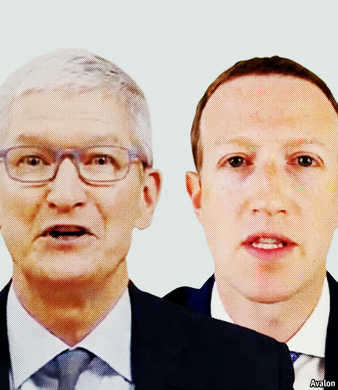

2021-02-24T11:23:12+00:00
科技巨头缠斗
库克战扎克
苹果的隐私政策击中Facebook要害
很少有哪家科技巨头会斥责另一个巨头，就像苹果对Facebook那样。“仅仅因为阴谋论和暴力煽动的参与率高，就优先传播这类内容，这样做的后果是什么？”1月28日，苹果公司老板蒂姆·库克在一次演讲中质问。“不能让社交困境演变为社会灾难。”他怒吼道。虽然没有点名道姓，但很明显说的就是Facebook。去年Facebook抱怨了奈飞热门纪录片《社交困境》（The Social Dilemma）对自己的刻画。
Facebook之前曾猛烈抨击苹果即将出台的“应用追踪透明度”措施，库克用这番警告做出了回应。很快，苹果会在其最新版移动操作系统iOS中通过弹窗询问用户，是否希望Facebook等被指名的应用跟踪他们在其他公司的应用和网站上的数字活动。预计大批人会选择“否”。这很可能会损害Facebook，可能还有谷歌和一大批其他的广告科技公司。
库克的义愤填膺很容易让人忘记苹果在早期是怎样启用广告追踪的。本世纪头十年，应用开发者和广告商学会了用苹果的“唯一设备标识符”（unique device identifier，UDID）在互联网上跟踪用户。这些UDID永久地对应每一部iPhone或iPad，让个人的线上活动很容易被监控。2010年，苹果和谷歌的隐私问题掀起了一场轩然大波。两年后，苹果做出回应，禁止应用开发商使用UDID。曾有几个月，广告商几乎完全无法追踪客户。
第六版iOS引入了一种侵入性较低的新工具，称为“广告商标识符”（identifiers for advertisers）。与UDID不同，这些标识符可以被屏蔽，而且不会识别用户的个人信息；收集到的所有数据要在聚合后才能使用。但它们仍然能够追踪用户，且在iPhone上是默认开启的，需要繁琐的操作才能关闭。苹果当时的目标是帮助应用开发者在iOS上赚取收入。
现在，隐私对苹果的品牌来说比以往任何时候都更关键。四年前，苹果停止在它的Safari浏览器上追踪用户。谷歌也宣布计划在2022年前从Chrome浏览器中去除第三方追踪cookie。广告业人士对广告商标识符仍然存在感到很奇怪，去年一些移动广告业人士认为苹果会把它们完全清除。有了应用追踪透明度，想来至少有一些用户会允许继续使用cookie。
尽管如此，Facebook还是做出了强力反击。去年12月，这家社交网站在报纸上刊登广告，称苹果的变化会伤害小企业。1月27日，老板扎克伯格在公布Facebook的业绩时，解释了他的公司如何为小公司提供广告定向投放工具，而在过去只有大公司才有资源来部署这样的工具。这呼应了其他广告科技公司发出的警告，说广告投放会重新回到那个“广而告之，盲目投钱”的世界，其中有一半广告根本是白白烧钱，但没人知道是哪一半。此外，Facebook认为，苹果正试图将互联网的商业模式从主要靠广告支持转变为越来越多的付费服务。从这个角度来看，苹果在隐私问题上的立场并非大公无私，而是夹带私心。
Facebook针对苹果的行动可能不只是公开训斥。上个月盛传扎克伯格的公司可能会起诉苹果，指控它在自家的App Store里偏袒自家应用，而对Facebook这样的第三方开发者加以限制。苹果的App Store已经受到美国司法部和欧盟竞争监管机构的审查。
当然，Facebook自己的抗议也并非完全大公无私。它或许想转移人们对它面临反垄断诉讼的注意力。而且它的营收可能会受到苹果此番举措的冲击。1月下旬，它将iOS系统的最新更新列为今年广告业务的一个不利因素。
大多数人都会欢迎苹果的隐私提议。苹果把它强加给一个大行业的能力突显了自身影响力，但这种彰显或许并不完全对它有利。至于Facebook，它现在的任务是推出自己的弹窗，说服人们相信它的广告追踪没有害处——即便是对最有才华的广告创意人士来说，这也是一项艰巨的任务。
2021-02-24T11:23:12+00:00
Feuding tech giants
Cook v Zuck
Apple’s privacy policy kicks Facebook where it hurts
SELDOM HAS a tech giant excoriated another as Apple did Facebook. “What are the consequences of prioritising conspiracy theories and violent incitement simply because of their high rates of engagement?” asked Apple’s boss, Tim Cook, in a speech on January 28th. “A social dilemma”, he thundered, “cannot be allowed to become a social catastrophe.” Facebook was singled out without being named. Last year it complained about its portrayal in “The Social Dilemma”, a hit Netflix documentary.
Mr Cook’s warning came in response to Facebook’s own broadsides against Apple’s forthcoming “app-tracking transparency” measure. Soon a pop-up from Apple will start asking users of the latest version of iOS, its mobile operating system, if they want named apps such as Facebook to track their digital activity across other companies’ apps and websites. Huge numbers are expected to demur. That is likely to damage Facebook, possibly Google and a wide range of other ad-tech businesses.
Mr Cook’s righteous wrath makes it easy to forget how in the early days, Apple enabled ad tracking. In the 2000s app developers and advertisers learned to use its “unique device identifiers” to follow users around the internet. These UDIDs, as they were known for short, were permanently attached to every iPhone or iPad and made it easy to keep tabs on individuals’ online activity. Then in 2010 a privacy furore erupted around Apple and Google. Two years later Apple responded by banning app developers from using UDIDs. For a brief few months advertisers could barely track its customers at all.
The sixth incarnation of iOS introduced a new, less intrusive tool called “identifiers for advertisers”. Unlike UDIDs, these can be blocked, and do not identify users personally; any data collected are aggregated before being used. But they still allow tracking, which is switched on by default on iPhones, and fiddly to turn off. Apple’s aim back then was to help app developers earn revenue in iOS.
Now privacy is more central than ever to Apple’s brand. Four years ago it stopped tracking users on Safari, its web browser. Google, too, has announced plans to eliminate third-party tracking “cookies” from its Chrome browser by 2022. Ad-industry insiders find it odd that identifiers for advertisers are still around; last year some in the mobile-ad industry reckoned Apple was going to kill them off. With app-tracking transparency at least some users will presumably allow cookies to stay.
Facebook has nevertheless fought back hard. In December the social network took out newspaper ads claiming that Apple’s changes would hurt small businesses. Announcing Facebook’s earnings on January 27th Mark Zuckerberg, its boss, explained how his firm gives tiny firms ad-targeting tools that in the past only large companies had the resources to employ. This echoed other ad-tech types’ warnings of a return to a “spray and pay” world where, once again, half of all ads are wasted but no one knows which half. Moreover, Facebook argues, Apple is trying to shift the internet’s business model from one that is chiefly ad-supported to one that is increasingly paid for. In this view, Apple’s stance on privacy is not selfless but self-serving.
Facebook’s campaign against Apple could go beyond public admonishments. Last month rumours swirled that Mr Zuckerberg’s firm might sue the iPhone-maker over alleged preferential treatment given to its own apps in its App Store, while it imposes restrictions on third-party developers like Facebook. Apple’s App Store is already under scrutiny by America’s Department of Justice and the European Union’s competition watchdog.
Of course, Facebook’s own protestations are not exactly disinterested. It may want to divert attention from the antitrust lawsuits it itself faces. And the company will probably take a hit to its top line as a result of Apple’s move. In late January it named the latest iOS changes as a headwind for its ad business this year.
Most people will welcome Apple’s privacy proposal. But its ability to impose it on a big industry has underlined its power in a way that may not be entirely helpful for it. As for Facebook, its task now is to come up with its own pop-up to reassure people that its ad-tracking is harmless—even for the most talented ad creative, a tough brief. ■
2021-02-24T11:23:12+00:00
科技巨頭纏鬥
庫克戰扎克
蘋果的隱私政策擊中Facebook要害
很少有哪家科技巨頭會斥責另一個巨頭，就像蘋果對Facebook那樣。“僅僅因為陰謀論和暴力煽動的參與率高，就優先傳播這類內容，這樣做的後果是什麼？”1月28日，蘋果公司老闆蒂姆·庫克在一次演講中質問。“不能讓社交困境演變為社會災難。”他怒吼道。雖然沒有點名道姓，但很明顯說的就是Facebook。去年Facebook抱怨了奈飛熱門紀錄片《社交困境》（The Social Dilemma）對自己的刻畫。
Facebook之前曾猛烈抨擊蘋果即將出台的“應用追蹤透明度”措施，庫克用這番警告做出了回應。很快，蘋果會在其最新版移動操作系統iOS中通過彈窗詢問用戶，是否希望Facebook等被指名的應用跟蹤他們在其他公司的應用和網站上的數字活動。預計大批人會選擇“否”。這很可能會損害Facebook，可能還有谷歌和一大批其他的廣告科技公司。
庫克的義憤填膺很容易讓人忘記蘋果在早期是怎樣啟用廣告追蹤的。本世紀頭十年，應用開發者和廣告商學會了用蘋果的“唯一設備標識符”（unique device identifier，UDID）在互聯網上跟蹤用戶。這些UDID永久地對應每一部iPhone或iPad，讓個人的線上活動很容易被監控。2010年，蘋果和谷歌的隱私問題掀起了一場軒然大波。兩年後，蘋果做出回應，禁止應用開發商使用UDID。曾有幾個月，廣告商幾乎完全無法追蹤客戶。
第六版iOS引入了一種侵入性較低的新工具，稱為“廣告商標識符”（identifiers for advertisers）。與UDID不同，這些標識符可以被屏蔽，而且不會識別用戶的個人信息；收集到的所有數據要在聚合後才能使用。但它們仍然能夠追蹤用戶，且在iPhone上是默認開啟的，需要繁瑣的操作才能關閉。蘋果當時的目標是幫助應用開發者在iOS上賺取收入。
現在，隱私對蘋果的品牌來說比以往任何時候都更關鍵。四年前，蘋果停止在它的Safari瀏覽器上追蹤用戶。谷歌也宣布計劃在2022年前從Chrome瀏覽器中去除第三方追蹤cookie。廣告業人士對廣告商標識符仍然存在感到很奇怪，去年一些移動廣告業人士認為蘋果會把它們完全清除。有了應用追蹤透明度，想來至少有一些用戶會允許繼續使用cookie。
儘管如此，Facebook還是做出了強力反擊。去年12月，這家社交網站在報紙上刊登廣告，稱蘋果的變化會傷害小企業。1月27日，老闆扎克伯格在公布Facebook的業績時，解釋了他的公司如何為小公司提供廣告定向投放工具，而在過去只有大公司才有資源來部署這樣的工具。這呼應了其他廣告科技公司發出的警告，說廣告投放會重新回到那個“廣而告之，盲目投錢”的世界，其中有一半廣告根本是白白燒錢，但沒人知道是哪一半。此外，Facebook認為，蘋果正試圖將互聯網的商業模式從主要靠廣告支持轉變為越來越多的付費服務。從這個角度來看，蘋果在隱私問題上的立場並非大公無私，而是夾帶私心。
Facebook針對蘋果的行動可能不只是公開訓斥。上個月盛傳扎克伯格的公司可能會起訴蘋果，指控它在自家的App Store里偏袒自家應用，而對Facebook這樣的第三方開發者加以限制。蘋果的App Store已經受到美國司法部和歐盟競爭監管機構的審查。
當然，Facebook自己的抗議也並非完全大公無私。它或許想轉移人們對它面臨反壟斷訴訟的注意力。而且它的營收可能會受到蘋果此番舉措的衝擊。1月下旬，它將iOS系統的最新更新列為今年廣告業務的一個不利因素。
大多數人都會歡迎蘋果的隱私提議。蘋果把它強加給一個大行業的能力突顯了自身影響力，但這種彰顯或許並不完全對它有利。至於Facebook，它現在的任務是推出自己的彈窗，說服人們相信它的廣告追蹤沒有害處——即便是對最有才華的廣告創意人士來說，這也是一項艱巨的任務。